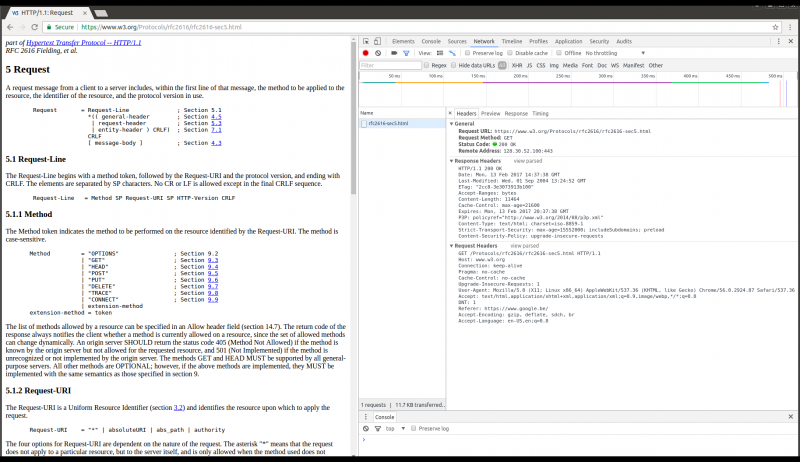

ESP8266 Web Server
Being able to ping the ESP is quite an achievement if you look at it from a technical point of view, but for most people, it's not that exciting, and not really useful.
In this chapter, I'll cover the basics of a web server, and teach you how to host a web page on the ESP.
Web servers
A web server is an Internet-connected device that stores and serves files. Clients can request such a file or another piece of data, and the server will then send the right data/files back to the client. Requests are made using HTTP.
HTTP
HTTP or the Hypertext Transfer Protocol is the text-based protocol used to communicate with (web) servers. There are multiple HTTP request methods, but I'll only cover the two most widely used ones: GET and POST.
HTTP GET
GET requests are used to retrieve data from a server, a web page for instance. It shouldn't change anything on the server, it just gets the data from the server, without side effects.
When you open a webpage in your browser, it will take the URL and put it in an HTTP GET request. This is just plain text. Then it will send the request to the right server using TCP. The server will read the request, check the URL, and send the right HTTP response for that URL back to the browser.
The anatomy of a GET request
The most important parts of a GET request are the request line and the host header. Let's take a look at an example:
GET /Protocols/rfc2616/rfc2616-sec5.html HTTP/1.1
Host: www.w3.org
Connection: keep-alive
Pragma: no-cache
Cache-Control: no-cache
Upgrade-Insecure-Requests: 1
User-Agent: Mozilla/5.0 (X11; Linux x86_64) AppleWebKit/537.36 (KHTML, like Gecko) Chrome/56.0.2924.87 Safari/537.36
Accept: text/html,application/xhtml+xml,application/xml;q=0.9,image/webp,*/*;q=0.8
DNT: 1
Referer: https://www.google.be/
Accept-Encoding: gzip, deflate, sdch, br
Accept-Language: en-US,en;q=0.8
The first line is the request line: it contains the request method: GET, in this case, the URI or Uniform Resource Identifier: /Protocols/rfc2616/rfc2616-sec5.html, and the HTTP version: 1.1.
The second line is the host header, it specifies the domain name of the host (server).
There are many other headers as well, but they're not really important when using an ESP8266.
Most servers will check if the URI is a file on their file system, and if that's the case, they'll send that file as a response.
Viewing HTTP headers in the browser
If you want to check the headers your browser sends, you can press F12, go to the network tab, reload the page, and click the request you want to inspect. If you want, you can click 'view source', this will show you the actual HTTP text.
Here's what that looks like in Chrome:

Sending extra information to the server
Sometimes, you might want to add extra information to the GET request. You can send key-value pairs by adding a question mark (?) to the URI, followed by key=value. Multiple pairs are separated by an ampersand (&).
For example:
GET /get-phone-number.php?firstName=John&lastName=Doe HTTP/1.1
Host: www.phonebook.example.com
...
If you use any special characters in the key or value names, you have to
URL-encode them.
HTTP POST
POST requests are used to send data to the server, for example, to send your user name and password to the server when you log in, or when you upload a photo. Unlike GET, POST can change the data on the server or the state of the server.
POST has a body that can contain data that is sent to the server.
The anatomy of a POST request
For example, the login page of your favorite site might send something like this when you enter your credentials and click the login button:
POST /login.php HTTP/1.1
Host: www.example.com
Connection: keep-alive
Content-Length: 480
Origin: http://www.example.com
Content-Type: multipart/form-data; boundary=----WebKitFormBoundaryQNEJOasMvgAOg8Kt
...
As you can see, the request line now has the POST method in it, and is still followed by a URI, /login.php, and the HTTP version, 1.1. The host header still contains just the domain name.
The real difference is the request body: a GET request has no payload, while you can add a lot of data to the body of a POST request. This data could be normal key-value pairs, like a username and a password, or actual files that are being uploaded.
Also note the Content-Type header: it tells the server what kind of data can be found in the body of the POST request.
Let's take a look at the body of the login example:
------WebKitFormBoundaryQNEJOasMvgAOg8Kt
Content-Disposition: form-data; name="username"
John Doe
------WebKitFormBoundaryQNEJOasMvgAOg8Kt
Content-Disposition: form-data; name="password"
p@ssw0rd123
------WebKitFormBoundaryQNEJOasMvgAOg8Kt
Content-Disposition: form-data; name="token"
9i9ZoLHl5pkRAeuKCEu76TbaCnMphwYkPEovEUY9PHk=
------WebKitFormBoundaryQNEJOasMvgAOg8Kt--
As you can see, there are three parameters inside the body, every parameter has a name (e.g. username), and a value (e.g. John Doe).
You could also use the same syntax we used before when adding parameters to a GET request:
POST /add-user.php HTTP/1.1
Host: www.example.com
Content-Length: 27
Content-Type: application/x-www-form-urlencoded
...
And the payload:
firstName=John&lastName=Doe
As you can see, the Content-Typeheader is different, indicating that the encoding of the values in the payload is different.
HTTP status codes
A server should answer all requests with an HTTP status code. This is a 3-digit number indicating if the request was successful or telling the client what went wrong. Here's a table with some of the most important and useful ones.
| Status Code |
Meaning |
| 200 |
OK: the request was successful |
| 303 |
See Other: used to redirect to a different URI, after a POST request, for instance |
| 400 |
Bad Request: the server couldn't understand the request, because the syntax was incorrect |
| 401 |
Unauthorized: user authentication is required |
| 403 |
Forbidden: the server refuses to execute the request, authorization won't help |
| 404 |
Not Found: the requested URI was not found |
| 500 |
Internal Server Error: The server encountered an unexpected condition and couldn't fulfill the request |
TCP & UDP Ports
In most cases, one device has many different services, for example, a web server, an email server, an FTP server, a Spotify streaming service, ...
If the device had just an IP address, it would be impossible to know which application a packet was sent to. That's why every service has a port number. It's an identifier for all different services or applications on a single device. In the example above, the web server will only listen for requests on port 80, the email server only on port 25, the FTP server only on port 20, Spotify will only receive streams on port 4371 ...
To specify a certain port, you can use a colon after the IP address of after the domain name. But most of the time, you don't have to add it explicitly. For example, all web servers listen on port 80, so a web browser will always connect to port 80.
{kind=link}